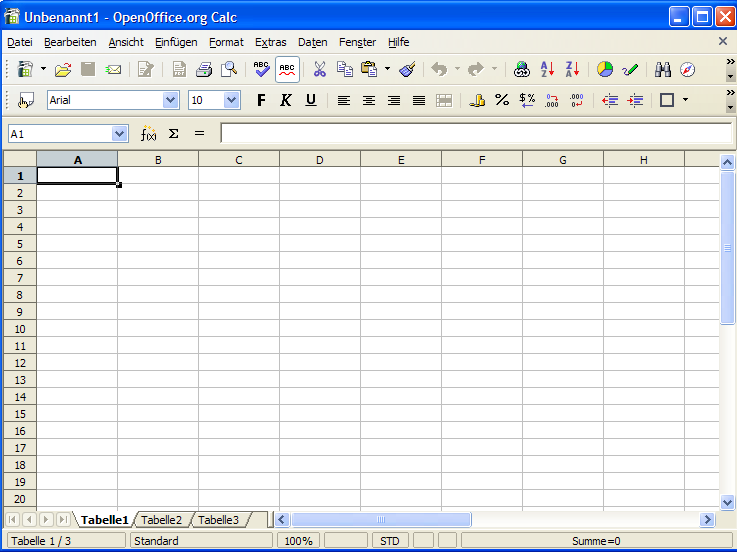
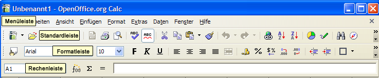

| [zurück] | [Hauptmenü] | [weiter] |
| [PDF] | ||
Erste Schritte in Calc
Einfache Kalkulationen, Zell- und Tabellenformatierungen erstellen
herausgegeben von
dem OpenOffice.org Dokumentations-Projekt
Inhaltsverzeichnis
Eine kurze Einführung in die Arbeitsumgebung

Abbildung 1: Das Anwendungsfenster von Calc
Bevor Sie beginnen, Ihre Kalkulationen zu erstellen, die Sie in Windeseile fertiggestellt haben werden, möchten wir Sie kurz mit Ihrer
Arbeitsumgebung vertraut machen.

Direkt unter der Titelleiste (in der "Unbenannt1
- OpenOffice.org Calc" steht) sehen Sie die Menü- und drei
Symbolleisten:
- Die Menüleiste
- Die Standardleiste
- Die Formatleiste
- Die Rechenleiste
Die Menüleiste enthält die Hauptbefehle der
Tabellenkalkulation. Die Standardleiste
ermöglicht den Zugriff auf allgemeine
Programmfunktionen wie Öffnen, Speichern, Kopieren,
Ausschneiden, Einfügen usw. sowie einige erweiterte Funktionen wie das Einfügen von Diagrammen und mehr.
Die Formatleiste
fasst einen Satz Werkzeuge zusammen, die
speziell für Kalkulationen oder zum Formatieren der Zellen
gedacht sind (Zahlenformat, Textausrichtung, Rahmen).
Schließlich
gibt es noch die Rechenleiste, deren
Sinn es ist, die Eingabe von Formeln, Zahlen und Texten zu ermöglichen. Sie zeigt Ihnen die momentan markierte Zelle an.
|
|
Sie können die Symbolleisten an Ihre persönlichen Bedürfnisse anpassen. Klicken Sie dazu auf die Pfeil-Schaltfläche am rechten Ende der jeweiligen Leiste. Es erscheint ein Menü, in dem Sie auf 'Symbolleiste anpassen...' klicken, um den Inhalt der Leiste zu verändern. Sie können auch 'Sichtbare Schaltflächen' wählen und Schalter Ihrer Wahl hinzufügen oder entfernen. Unter 'Ansicht' - 'Symbolleisten' finden Sie ausserdem weitere Symbolleisten (wie z.B. „Zeichnen“). |
Am unteren Bildschirmrand sehen Sie die Statuszeile. Sie fasst interessante Informationen über Ihre aktuelle Tabelle zusammen, zum Beispiel den Zoom-Faktor und die Summe der markierten Zellen.
Sie werden bemerken, dass das Dokument, das Sie gerade geöffnet haben, standardmäßig drei Tabellen enthält. Sie erkennen sie an drei schmalen Reitern über der Statuszeile, die mit Namen versehen sind: „Tabelle1“, „Tabelle2“, „Tabelle3“.
Eine Tabelle wird durch gitterartig angeordnete Zellen dargestellt, die durch Koordinaten definiert werden. Die Koordinaten jeder Zelle ergeben sich aus der Spalte (horizontale Position), beschrieben durch Buchstaben (A...IV), und der Zeile (vertikale Position), beschrieben durch Zahlen (1...65536). Diese Koordinaten werden in grauen Spalten bzw. Überschriften in der Tabelle dargestellt. Daraus folgt, dass die erste Zelle (ganz oben, ganz links) die Bezeichnung A1 trägt. Wenn Sie sich in der Tabelle nach rechts bewegen, werden Sie feststellen, dass die Spalten ab der Spalte 27 durch zwei Buchstaben identifiziert werden: nach Z geht es mit AA, AB, AC, usw. weiter. Nach AZ geht es dann wieder mit BA, BB, BC, usw. weiter. Mit einem Klick auf die Spalten- oder Zeilenbezeichnung (also das graue Kästchen) können Sie die ganze Spalte bzw. Zeile markieren.
Die erste Kalkulation
Falls Sie direkt hier angefangen haben zu lesen und den vorherigen Abschnitt übersprungen haben, sollten Sie sich nochmal überlegen nicht doch oben zu beginnen, denn einige Begiffe, die ab jetzt benutzt werden, wurden dort erläutert. Wie auch immer, wenn Sie dies nicht möchten oder es Sie langweilt, lesen Sie weiter und Sie werden lernen, wie man mit Calc Additionen durchführt!
Wie oben erwähnt, werden die Kästchen im Gitternetz Zellen genannt. Sie können in diese Zellen Zahlen, Text oder Formeln eingeben. Klar, denn die Existenzberechtigung einer Tabellenkalkulation ist der sinnvolle Umgang mit den Inhalten solcher Zellen.
Nun gut, genug geredet, lassen Sie uns die erste Kalkulation erstellen:
- In die Zelle A1 schreiben Sie =2+3.
- Drücken Sie anschließend <ENTER> auf der Tastatur.
- Die Zahl 5 erscheint in der Zelle, denn das Ergebnis einer Berechnung wird automatisch dargestellt.
Sie fragen sich, warum vor "2+3" ein "=" steht? Ganz einfach: damit erklären Sie der Tabellenkalkulation, dass Sie keinen Text, sondern eine Formel eingeben möchten. Falls Sie das "=" weglassen, erscheint nach der Eingabe "2+3" in der Zelle.
Der Cursor befindet sich nun in der Zelle unmittelbar unter der Zelle A1. Wenn Sie wieder in Zelle A1 klicken, sehen Sie die mathematische Operation, die Sie eben eingegeben haben, in der Rechenleiste.
Weiter im Text: Tippen Sie 6 in Zelle A2 und wir werden das Ergebnis der Addition von A1 und A2 in Zelle A3 anfordern. Das geht folgendermaßen:
- Den Cursor in Zelle A2 platzieren und 6 eingeben.
- Bestätigen Sie den Eintrag mit <ENTER> und der Cursor wird in die Zelle A3 wechseln.
- Schreiben Sie =A1+A2.
- Bestätigen Sie mit <ENTER> und das Ergebnis 11 wird in Zelle A3 dargestellt.
Die letzte Berechnung wurde unter Nutzung der Koordinaten durchgeführt.
Lassen Sie uns weitermachen und versuchen, mehrere Zellen zu addieren, d.h. einen Bereich. Klicken Sie auf „Tabelle 2“, um eine leere Tabelle zu verwenden.
- Geben Sie einige Zahlen in die Zellen A1 bis A9 ein.
- Bestätigen Sie mit <ENTER> und der Cursor wird in Zelle A10 wechseln.
- Nun geben Sie =SUMME(A1:A9) ein.
- Bestätigen Sie mit <ENTER> und Sie werden das Ergebnis der Addition in Zelle A10 finden, während die Formel in der Kalkulationsleiste steht.
Durch Setzen des Doppelpunkts zwischen die Zellbezüge haben Sie dem Programm mitgeteilt, dass Sie die Werte der Zellen im Bereich von A1 bis A9 addieren wollen. Der Bereich wird am Bildschirm mit einem farbigen Rahmen dargestellt.
Mit der Funktion SUMME() teilen Sie dem Programm die Art der mathematischen Operation mit, die auf die Zellbezüge zwischen den Klammern angewandt werden soll.
|
|
Als Sie anfingen, SUMME zu schreiben, werden Sie sicher bemerkt haben, dass Calc die Formel vervollständigen wollte. Dies ist die Autovervollständigungs-Funktion. Es genügt, <ENTER> zu drücken, falls Sie mit dem Vorschlag von OpenOffice.org einverstanden sind. Ihr Cursor wird automatisch zwischen den Klammern positioniert, sodass Sie nur die Zellbezüge einzugeben brauchen. |
|
|
Da Summen in Tabellenkalkulationen sehr häufig benötigt werden, gibt es dafür ein eigenes Symbol in der Rechenleiste: das Summenzeichen (es sieht aus wie ein um 90° nach links gedrehtes M). Sie hätten also auch die Zelle A10 markieren und anschließend auf das Summenzeichen klicken können. Dabei wird automatisch der Bereich über der ausgewählten Zelle vorgeschlagen. Sie können ihn aber natürlich mit der Maus oder über die Eingabe in der Rechenleiste ändern. |
Gut, zurück ans Werk. Dieses Mal ersetzen wir den Doppelpunkt zwischen A1 und A9 durch ein Semikolon (;). Wie Sie sehen, ist das Ergebnis ein völlig anderes. In diesem Fall haben Sie nur den Inhalt von A1 zu dem Inhalt von A9 addiert. Daraus folgt, dass Sie, um zwei Zellbereiche zu addieren, lediglich =SUMME(A1:A9;B1:B9) schreiben müssen.
Sie können die Bereiche, die einbezogen werden sollen, auch mit der Maus markieren. Nachdem Sie =SUMME( in die Zielzelle geschrieben haben, klicken Sie in die erste Zelle des zu markierenden Bereichs, halten die Maustaste gedrückt und ziehen die Maus bis in die letzte zu markierende Zelle, in der Sie die Maustaste loslassen. Sie werden sehen, dass die Formel automatisch in der Rechenleiste vervollständigt wurde.
|
|
Wenn die Zahl zu groß ist, um komplett in einer Zelle dargestellt zu werden, wird sie durch Rauten (###) ersetzt. Um die Zellgröße einzustellen, mü Sie lediglich auf die rechte Begrenzung der Spalte zu klicken (oben im grauen Bereich, wo auch die Spaltennamen A, B, C usw. angegeben sind) und diese bei gedrückter Maustaste nach rechts (erweitern) oder links (verkleinern) zu verschieben. Diese Funktion erreichen Sie auch über Format - Spalte - Optimale Breite.... |
Über Zellbezüge
Es ist wichtig, grundlegendes Wissen über Zellbezüge zu haben, wenn Sie Berechnungen mit Zellen ausführen möchten, die Formeln enthalten.
Ein relativer Bezug ist ein Bereich, dessen Bezüge angepasst werden, wenn die Formel verschoben wird.
Beispiel: Wenn Sie die Formel =SUMME(A1:A9) in Spalte B verschieben, wird sie zu =SUMME(B1:B9).
Ein absoluter Bezug wird benutzt, wenn sich eine Berechnung exakt auf eine bestimmte Zelle bezieht. Um den absoluten Bezug zu Spalte A Zeile 1 festzulegen, schreiben Sie beispielsweise $A$1. Daher ist $A der absolute Bezug zu Spalte A und $1 der absolute Bezug zu Zeile 1.
Nun, da Sie die einige grundlegende Dinge kennengelernt haben, üben Sie ein wenig subtrahieren, multiplizieren und dividieren!
Formatierungen
Ihr Dokument enthält drei Tabellen: Tabelle 1, 2 und 3. Geben Sie jeder Tabelle eine klare Bezeichnung (das macht es übersichtlicher). Rechter Mausklick auf den Reiter von Tabelle1, und ein Kontextmenü erscheint. Wählen Sie den Eintrag 'Tabelle umbenennen...' und geben Sie im folgenden Fenster den gewünschten Namen für die Tabelle ein. Bestätigen Sie mit 'OK' und der neue Name erscheint unten auf dem Tabellenreiter.
Sie werden bemerkt haben, dass das Kontextmenü auch die Möglichkeit vorsieht, neue Tabellen einzufügen, zu verschieben bzw. zu kopieren oder zu löschen. Jede Auswahl kann in einem speziellen Dialog präzise definiert werden.
Lassen Sie uns die Zellformate bearbeiten. Angenommen, Sie wollen die Überschriften Ihres Dokuments in mehreren Tabellen, gehen Sie wie folgt vor:
- Markieren Sie alle betroffenen Tabellen (um eine zweite Tabelle auszuwählen halten Sie <STRG> gedrückt und klicken auf den Reiter der zweiten Tabelle, die Sie auswählen möchten. Der Reiter wird daraufhin weiß). Klicken Sie mit der Maus in die erste Zelle und markieren Sie bei gedrückter Maustaste die Zellen, über die sich die Überschrift erstrecken soll, also beispielsweise Zelle A1 bis D1.
- Wählen Sie in der Menüzeile 'Format' - 'Druckbereiche - ' Festlegen'.
Meist möchten Sie die Überschrift in den gewählten Zellen zentrieren. Dazu gehen Sie so vor:
- Markieren Sie die Zellen mit der Überschrift.
- In der Menüzeile wählen Sie 'Format' - 'Zellen...'.
- In der folgenden Dialogbox klicken Sie auf den Reiter 'Ausrichtung'.
- Dort wählen Sie unter 'Horizontal' den Eintrag 'Zentriert' aus
- Schließen Sie den Dialog mit 'OK'.
Falls Sie eine dünne Linie um Ihre Zellen haben möchten, markieren Sie die Zellen und wählen Sie in der Menüzeile 'Format' - ' Zellen...'. Klicken Sie auf den Reiter 'Umrandung'. Entscheiden Sie sich für die richtige Linienstärke und den gewünschten Stil. Schließen Sie den Dialog mit 'OK'.
Sie werden bemerken, dass die Dialogbox 'Zellen formatieren' eine stattliche Anzahl Reiter enthält, z.B. 'Schrift', 'Schrifteffekt' oder 'Ausrichtung'. Diesen Dialog erreichen Sie auch durch einen Rechtsklick auf eine Zelle und den Menüpunkt 'Zellen formatieren'. Einige dieser Punkte sind auch in die Symbolleiste integriert.
 Lassen
Sie uns einige Schalter in der Formatleiste näher
betrachten. Die ersten vier Symbole ermöglichen Ihnen Text in einer
Zelle horizontal auszurichten - linksbündig, zentriert, rechtsbündig oder im Blocksatz. Mit dem nächsten Symbol können Sie Zellen verbinden. Die letzten drei Symbole finden Sie unter der (o.g.) Funktion 'Sichtbare Schaltflächen': Sie regeln die vertikalte Ausrichtung des Texts. - Wirklich praktisch!
Lassen
Sie uns einige Schalter in der Formatleiste näher
betrachten. Die ersten vier Symbole ermöglichen Ihnen Text in einer
Zelle horizontal auszurichten - linksbündig, zentriert, rechtsbündig oder im Blocksatz. Mit dem nächsten Symbol können Sie Zellen verbinden. Die letzten drei Symbole finden Sie unter der (o.g.) Funktion 'Sichtbare Schaltflächen': Sie regeln die vertikalte Ausrichtung des Texts. - Wirklich praktisch!
Um Text in Zellen deutlicher von Zahlen und Formeln zu unterscheiden, können Sie die Funktion Werte hervorheben nutzen:
- Wählen Sie in der Menüzeile 'Ansicht' - Werte hervorheben'.
- Sie werden feststellen, dass Text schwarz, alle Zahlen blau und alle Formeln grün dargestellt werden.
|
|
Um Zellen sofort so zu formatieren, dass sie Text enthalten, fügen Sie einen Apostroph (') vor dem Text in die Zelle ein, z.B.: 'Preis |
Jetzt bekommt unsere Tabelle den letzten Schliff!
Lassen Sie uns die Seiteneinstellungen noch betrachten. Möglicherweise fällt es Ihnen leichter mit querliegenden Seiten zu arbeiten Das erreichen Sie so:
- In der Menüzeile wählen Sie 'Format' - 'Seite...'.
- Klicken Sie auf den Reiter 'Seite'.
- Im Bereich 'Ausrichtung' markieren Sie 'Querformat'.
- Bestätigen Sie mit 'OK'.
Um zu prüfen, ob Ihr Dokument tatsächlich im Querformat gespeichert wurde, klicken Sie im Menü auf 'Datei' - 'Seitenansicht'.
Lassen Sie uns noch einmal auf die Seiten-Dialogbox zurückkommen. Dort können Sie auch Kopf- oder Fußzeilen eingeben.
Das betrachten wir nun genauer:
- Wählen Sie im Menü 'Format' - 'Seite'.
- Klicken Sie auf den Reiter 'Fußzeile'.
- Dort setzen Sie eine Markierung vor 'Fußzeile einschalten'.
- Der Schalter 'Zusätze' ermöglicht eine Umrandung oder einen Hintergrund für die Fußzeile zu wählen.
- Klicken Sie auf 'Bearbeiten'.
- Im erscheinenden Fenster sehen Sie drei kleinere Fenster, ein Dropdown-Menü und einige Symbole. Die kleineren Fenster entsprechen Abschnitten, in die die Fußzeile unterteilt wurde, und die Symbole Feldbefehlen. Standardmäßig erscheint im mittleren Fenster „Seite“ gefolgt von der Seitenzahl; in dem Dropdown-Menü stehen Ihnen einige Vorgaben zur Auswahl.
- Um eine benutzerdefinierte Fußzeile zu erstellen, platzieren Sie den Cursor in dem Fenster, das Sie nutzen möchten und klicken Sie dann auf eines der Feldsymbole (z.B. „Dateiname“, „Seite“ oder „Datum“). Feldbefehle erscheinen grau hinterlegt.
- Klicken Sie auf 'OK' um zum Ausgangsfenster zurückzukehren.
- Schließen Sie dieses Fenster mit 'OK'.
|
|
Natürlich können Sie jeden beliebigen Text in die Kopf- oder Fußzeile eingeben, einschließlich Ihres Firmennamens oder Ähnlichem. |
Drucken Ihres Dokuments
Um ein einzelnes Blatt Ihres Dokuments zu drucken gehen Sie wie folgt vor:
- In der Menüzeile wählen Sie 'Datei' - 'Drucken...'.
- In der Dialogbox, die erscheint, wählen Sie unter 'Druckbereich' den Schalter 'Seiten' und geben die Nummer der Seite an, die Sie drucken wollen.
- Starten Sie den Druck mit 'OK'.
Im Abschnitt 'Druckbereich' können Sie beispielsweise auch „2,3“ eintragen, um Seite 2 und Seite 3, oder auch „2-5“ um die Seiten 2 bis 5 zu drucken.
Ein schnellerer Weg besteht darin, die gewünschten Tabellen zu markieren und in der Standardleiste das Drucksymbol anzuklicken. Das geht so:
- Drücken und halten Sie <STRG>, während Sie in Ihrem Dokument die gewünschten Tabellenreiter anklicken. So können Sie mehrere Tabellen gleichzeitig wählen.
- Klicken Sie auf das Symbol 'Datei direkt drucken' in der Standardleiste. Es wird ohne weitere Rückfrage gedruckt!
- Um die Auswahl aufzuheben, halten Sie <STRG> gedrückt und klicken Sie auf den entsprechenden Tabellenreiter.
Um nur bestimmte Spalten oder Zeilen zu drucken:
- Markieren Sie die gewünschten Bereiche.
- Wählen Sie 'Datei' - 'Drucken' im Menü.
- In der Dialogbox, die erscheint, markieren Sie 'Auswahl' im Abschnitt 'Druckbereich'.
- Drücken Sie 'OK'.
Mitwirkende
Autor: Sophie Gautier
deutsche Übersetzung: Friedhelm Abels
Korrektur & Überarbeitung: Johannes Czerwinski, André Schnabel, Katrin Räuber
letzte Änderung: 20.09.2005
Kontakt:
OpenOffice.org Documentation Project -
http://documentation.openoffice.org
OpenOffice.org auf Deutsch -
http://de.openoffice.org
| [zurück] | [Hauptmenü] | [weiter] |
| [PDF] | ||